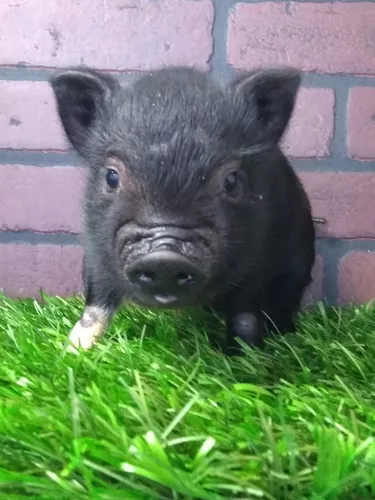

PetCare
PetCare
PetCare
PetCare



Nombre de la Mascota: "Piolín"
Descripción:
¡Conoce a "Piolín"! Este perico vibrante es una explosión de color y alegría en nuestra
clínica
veterinaria. Con su plumaje brillante y su personalidad bulliciosa, Piolín es una
mascota
encantadora
que ilumina cualquier espacio con su presencia.
Características Físicas:
Piolín es un perico mediano con un plumaje vibrante de verde, azul y amarillo. Sus alas
ágiles lo
hacen
perfecto para volar y explorar.
Personalidad:
Es un compañero vocal y cariñoso que disfruta interactuar con humanos y otras aves. Es
curioso y
juguetón, siempre buscando aventuras.
Cuidados:
Requiere una dieta equilibrada y tiempo para volar fuera de la jaula. Juguetes y
estimulación mental
son
esenciales para su bienestar.
Parte de la Familia:
Piolín es parte de nuestra familia en la clínica veterinaria, comprometidos con su salud
y
felicidad.
¡Ven a conocer a Piolín y déjate cautivar por su encanto!